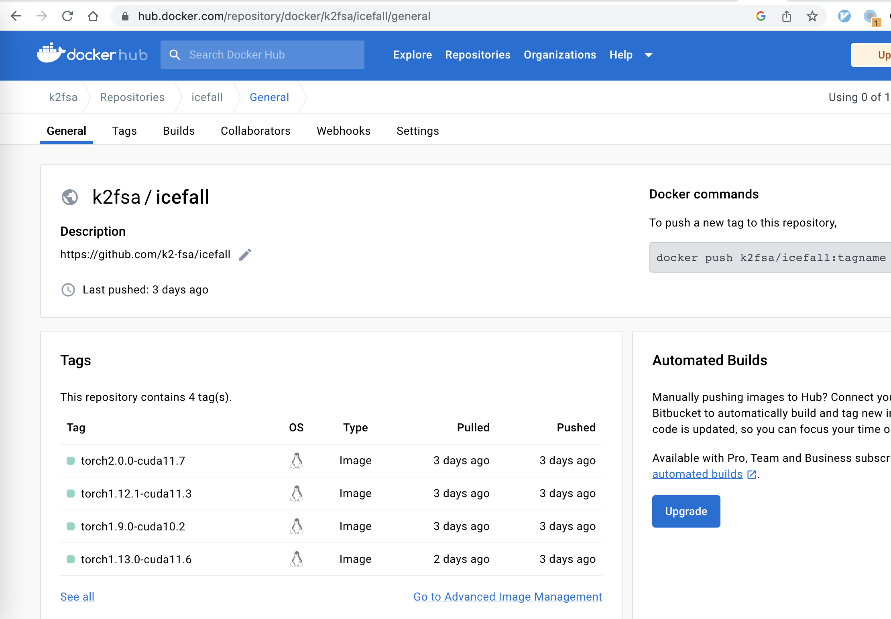

Introduction
We have pre-built docker images hosted at the following address:


You can find the Dockerfile at https://github.com/k2-fsa/icefall/tree/master/docker.
We describe the following items in this section:
How to view available tags
How to download pre-built docker images
How to run the yesno recipe within a docker container on
CPU
Download a docker image (CUDA)
Suppose that you select the tag torch1.13.0-cuda11.6, you can use
the following command to download it:
sudo docker image pull k2fsa/icefall:torch1.13.0-cuda11.6
Download a docker image (CPU)
Suppose that you select the tag cpu-py3.8-torch2.1.2-v1.1, you can use
the following command to download it:
sudo docker pull ghcr.io/k2-fsa/icefall:cpu-py3.8-torch2.1.2-v1.1
Run a docker image with GPU
sudo docker run --gpus all --rm -it k2fsa/icefall:torch1.13.0-cuda11.6 /bin/bash
Run a docker image with CPU
sudo docker run --rm -it ghcr.io/k2-fsa/icefall:cpu-py3.8-torch2.1.2-v1.1 /bin/bash
Run yesno within a docker container
After starting the container, the following interface is presented:
# GPU-enabled docker
root@60c947eac59c:/workspace/icefall#
# CPU-only docker
root@60c947eac59c:# mkdir /workspace; git clone https://github.com/k2-fsa/icefall
root@60c947eac59c:# export PYTHONPATH=/workspace/icefall:$PYTHONPATH
It shows the current user is root and the current working directory
is /workspace/icefall.
Update the code
Please first run:
root@60c947eac59c:/workspace/icefall# git pull
so that your local copy contains the latest code.
Data preparation
Now we can use
root@60c947eac59c:/workspace/icefall# cd egs/yesno/ASR/
to switch to the yesno recipe and run
root@60c947eac59c:/workspace/icefall/egs/yesno/ASR# ./prepare.sh
Hint
If you are running without GPU with a GPU-enabled docker, it may report the following error:
File "/opt/conda/lib/python3.9/site-packages/k2/__init__.py", line 23, in <module> from _k2 import DeterminizeWeightPushingType ImportError: libcuda.so.1: cannot open shared object file: No such file or directory
We can use the following command to fix it:
root@60c947eac59c:/workspace/icefall/egs/yesno/ASR# ln -s /opt/conda/lib/stubs/libcuda.so /opt/conda/lib/stubs/libcuda.so.1
The logs of running ./prepare.sh are listed below:
Training
After preparing the data, we can start training with the following command
root@60c947eac59c:/workspace/icefall/egs/yesno/ASR# ./tdnn/train.py
All of the training logs are given below:
Hint
It is running on CPU and it takes only 16 seconds for this run.
Decoding
After training, we can decode the trained model with
root@60c947eac59c:/workspace/icefall/egs/yesno/ASR# ./tdnn/decode.py
The decoding logs are given below:
2023-08-01 02:06:22,400 INFO [decode.py:263] Decoding started
2023-08-01 02:06:22,400 INFO [decode.py:264] {'exp_dir': PosixPath('tdnn/exp'), 'lang_dir': PosixPath('data/lang_phone'), 'lm_dir': PosixPath('data/lm'), 'feature_dim': 23, 'search_beam': 20, 'output_beam': 8, 'min_active_states': 30, 'max_active_states': 10000, 'use_double_scores': True, 'epoch': 14, 'avg': 2, 'export': False, 'feature_dir': PosixPath('data/fbank'), 'max_duration': 30.0, 'bucketing_sampler': False, 'num_buckets': 10, 'concatenate_cuts': False, 'duration_factor': 1.0, 'gap': 1.0, 'on_the_fly_feats': False, 'shuffle': False, 'return_cuts': True, 'num_workers': 2, 'env_info': {'k2-version': '1.24.3', 'k2-build-type': 'Release', 'k2-with-cuda': True, 'k2-git-sha1': '4c05309499a08454997adf500b56dcc629e35ae5', 'k2-git-date': 'Tue Jul 25 16:23:36 2023', 'lhotse-version': '1.16.0.dev+git.7640d663.clean', 'torch-version': '1.13.0', 'torch-cuda-available': False, 'torch-cuda-version': '11.6', 'python-version': '3.9', 'icefall-git-branch': 'master', 'icefall-git-sha1': '375520d-clean', 'icefall-git-date': 'Fri Jul 28 07:43:08 2023', 'icefall-path': '/workspace/icefall', 'k2-path': '/opt/conda/lib/python3.9/site-packages/k2/__init__.py', 'lhotse-path': '/opt/conda/lib/python3.9/site-packages/lhotse/__init__.py', 'hostname': '60c947eac59c', 'IP address': '172.17.0.2'}}
2023-08-01 02:06:22,401 INFO [lexicon.py:168] Loading pre-compiled data/lang_phone/Linv.pt
2023-08-01 02:06:22,403 INFO [decode.py:273] device: cpu
2023-08-01 02:06:22,406 INFO [decode.py:291] averaging ['tdnn/exp/epoch-13.pt', 'tdnn/exp/epoch-14.pt']
2023-08-01 02:06:22,424 INFO [asr_datamodule.py:218] About to get test cuts
2023-08-01 02:06:22,425 INFO [asr_datamodule.py:252] About to get test cuts
2023-08-01 02:06:22,504 INFO [decode.py:204] batch 0/?, cuts processed until now is 4
[W NNPACK.cpp:53] Could not initialize NNPACK! Reason: Unsupported hardware.
2023-08-01 02:06:22,687 INFO [decode.py:241] The transcripts are stored in tdnn/exp/recogs-test_set.txt
2023-08-01 02:06:22,688 INFO [utils.py:564] [test_set] %WER 0.42% [1 / 240, 0 ins, 1 del, 0 sub ]
2023-08-01 02:06:22,690 INFO [decode.py:249] Wrote detailed error stats to tdnn/exp/errs-test_set.txt
2023-08-01 02:06:22,690 INFO [decode.py:316] Done!
Congratulations! You have finished successfully running icefall within a docker container.